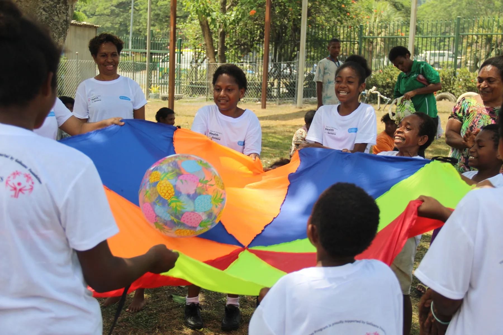
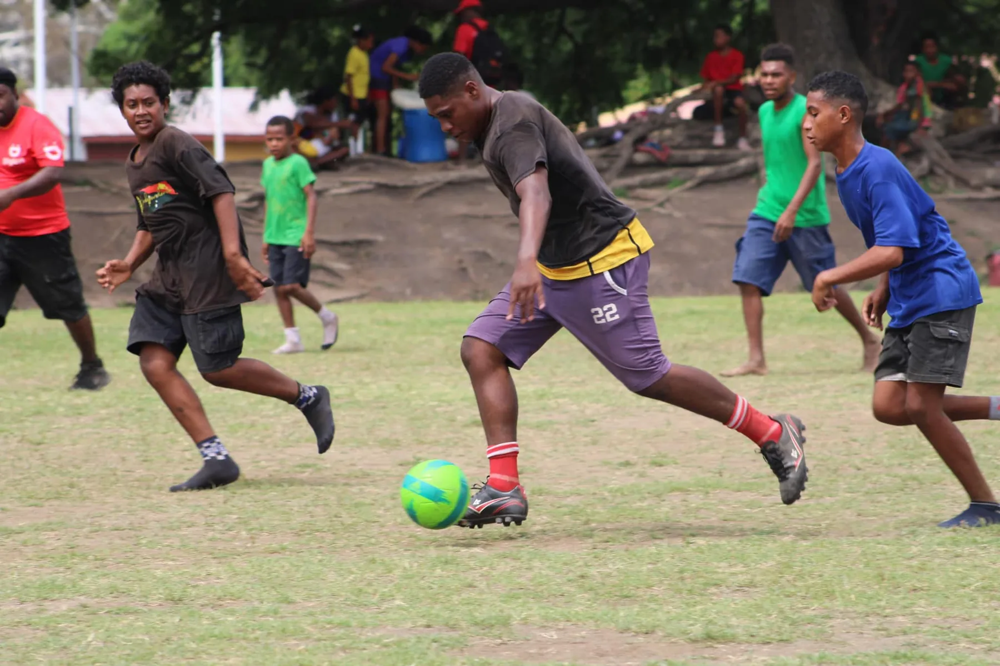
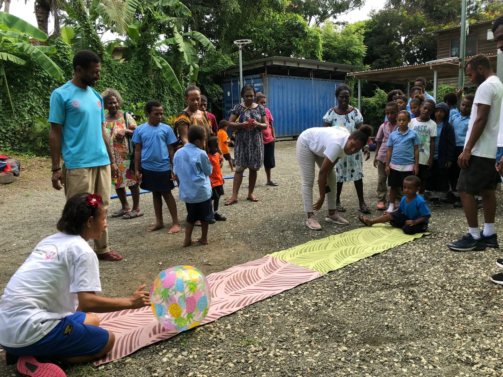
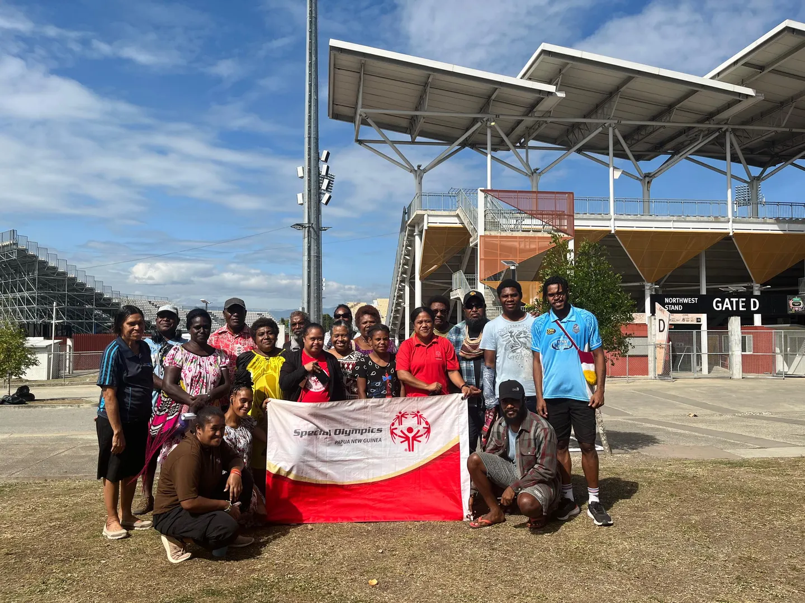
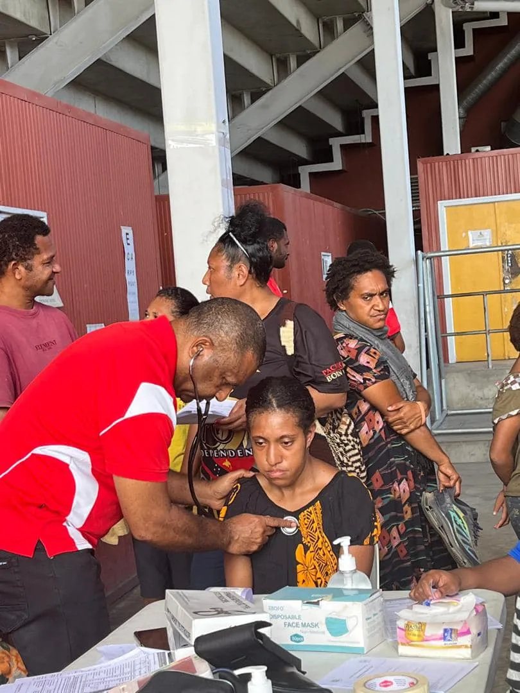
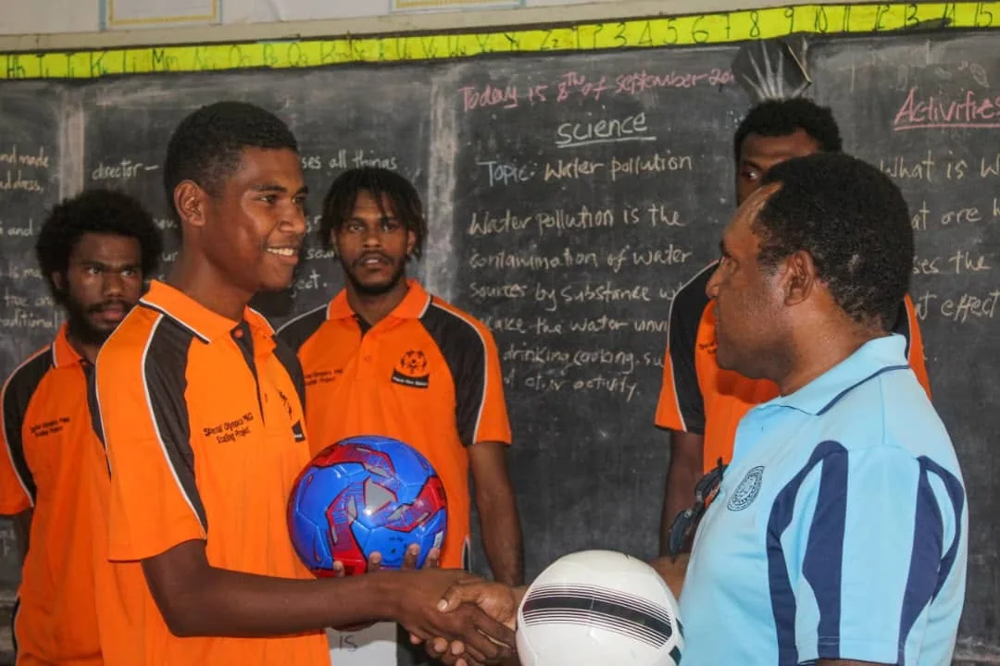

OUR PROGRAMS
A team around
every athlete.
Our programs create different ways to play, learn, connect and lead. Explore the area that feels right for you.
Contact our team
FIVE WAYS TO TAKE PART
Find your way in.
Each program supports inclusion in a different way. Discover what happens in each one and contact SOPNG to learn how to connect.

Sports & Competition
Inclusive sports give athletes a place to build skills, work as a team and experience the joy of competition.

Young Athletes
Young children explore movement through playful activities that support confidence, coordination and connection.

Family Support Network
Families connect with one another and help shape a more inclusive experience for athletes.

Healthy Communities
Health activities and community partnerships help athletes find support and make informed choices about wellbeing.

Youth Innovation
Young people build leadership skills and work with peers to make their schools and communities more inclusive.
NOT SURE WHERE TO START?
Let’s find the right
next step.
Tell us what you’re interested in, and the SOPNG team can point you in the right direction.
Ask a question